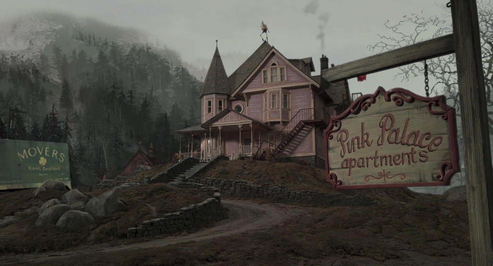

The Fall of Coraline
Coraline feels unvalued as a friend and daughter she keeps a distance from everyone. In the other world she begins to get everything she has ever wanted which can make her selfish. The world itself is all about her and the "other mother" who is identical to her real mother can give her everything she ever wanted. There is a catch though because as the fantasy world is perfect she finds that the only way she can stay is if she sows buttons into her eyes as all the characters have button eyes in the fantasy world. Coraline disagrees with that but finds herself trapped in the world until she agrees to the deal.
The Rise of Coraline
Coraline is now stuck in a not so "cool" world and now has to escape the evil that begins
to show. The cat can talk in the fantasy world who begins to tell Coraline all the secrets
of the "other mother". Coraline realizes the only way to escape is to play the games the evil
women has in store. Coraline has to test her own courage and starts to realize that the life she
has is actually not to bad in the real world. These lessons will lead to her fate towards the end
of the